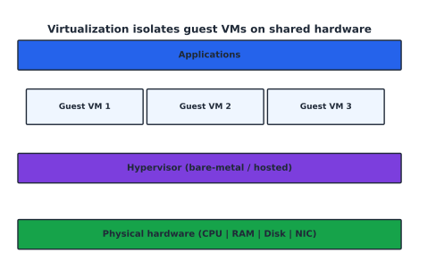
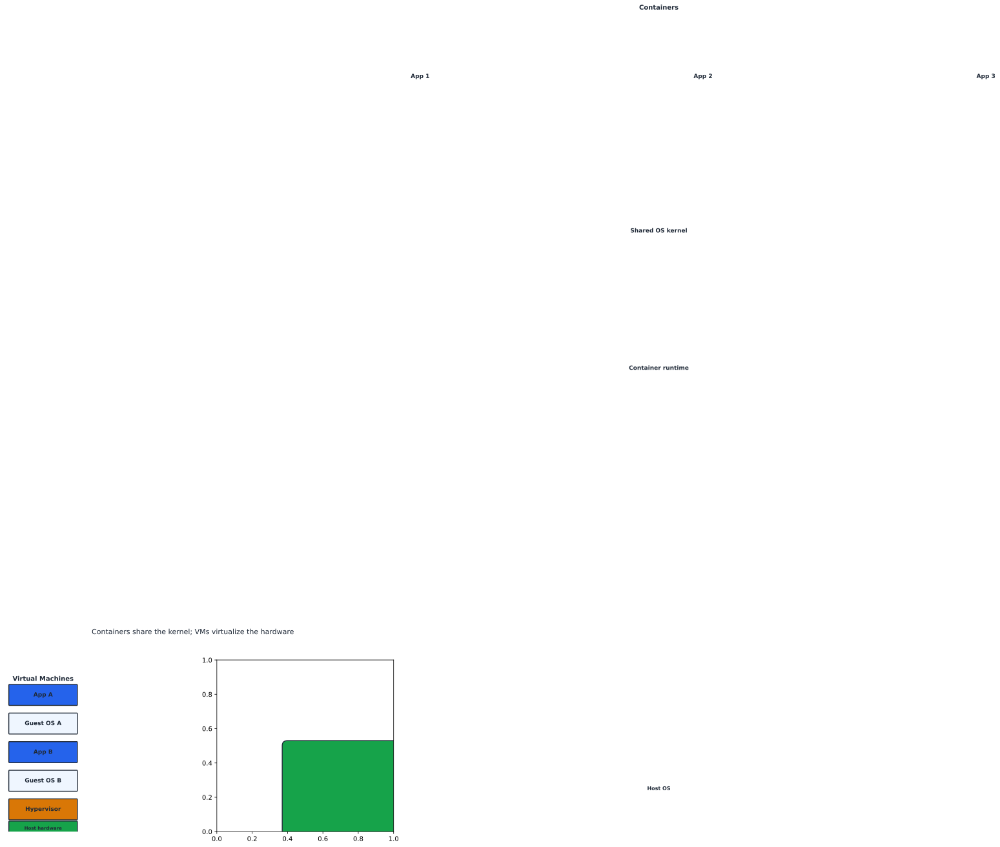

Cloud Computing and Virtualization Fundamentals#
Learning Objectives#
Distinguish IaaS / PaaS / SaaS and deployment models.
Define distributed systems and the 8 Fallacies.
Explain virtualization and the hypervisor role.
Compare containers vs VMs.
Overview AWS Compute families and pricing/billing levers.
Cloud Service Models#
Cloud delivers compute/storage/networking over the internet nist_cloud_sd with pay-as-you-go pricing.
Model |
You manage |
Provider manages |
AWS example |
|---|---|---|---|
IaaS |
OS + runtime + data + apps |
virtualization, hosts, storage, network |
EC2 |
PaaS |
data + apps |
runtime/OS/middleware/infra |
RDS, Elastic Beanstalk |
SaaS |
(just use it) |
everything |
Gmail / M365 |
You manage ↓ SaaS (least control) … PaaS … IaaS (most control) ↑ AWS manages the rest underneath
NIST five characteristics: on-demand self-service, broad network access, resource pooling, rapid elasticity, measured (metered) service.
Deployment Models#
Model |
Definition |
When to use |
|---|---|---|
Public |
provider-owned, multi-tenant |
agility, low upfront |
Private |
dedicated to one org |
strict control/compliance |
Hybrid |
public + private linked |
burst, legacy, data gravity |
Multi-cloud |
several public providers |
avoid lock-in |
Note
Your shared-responsibility and lifecycle choices (which provider secures what) depend on the deployment model you choose.
Distributed Systems#
A distributed system appears to users as a single coherent system but is spread across multiple computers (the Web, DNS, microservices, S3).
Goals: scalability, availability, performance.#
Problems (the 8 Fallacies)#
Networks are not reliable, fast, limitless-bandwidth, secure, stable-topology, single-admin, zero-cost, or homogeneous. Assume partial failure and design for it.
Design: no single point of failure (SPOF) + any component may fail at any time
Virtualization Theory#
Virtualization runs many isolated guest OSes on one physical host via a hypervisor (VMM), which schedules CPU/memory, multiplexes I/O, and isolates tenants.
{kind=link}

Fig. 5 A hypervisor isolates guest VMs on shared hardware (CPU, memory, disk, NIC).#
Hypervisor type |
Runs on |
Examples |
|---|---|---|
Type I (bare-metal) |
hardware directly |
ESXi, KVM, Hyper-V, Xen |
Type II (hosted) |
host OS |
VirtualBox, VMware Workstation |
Modern CPUs ship virtualization extensions (Intel VT-x / AMD-V) that accelerate the process.
Containers vs. Virtual Machines#
{kind=link}

Fig. 6 VMs virtualize hardware (full OS each); containers share the host kernel and isolate apps.#
Attribute |
Virtual Machine |
Container |
|---|---|---|
Abstraction |
hardware |
OS/kernel |
Isolation |
guest OS boundary |
namespace/cgroups |
Overhead |
high (full OS) |
low (shared kernel) |
Startup |
seconds-minutes |
milliseconds-seconds |
Image size |
GBs |
MBs |
Density |
~tens/host |
~hundreds/host |
Use |
isolation/legacy |
microservices, CI/CD |
Tip
Prefer containers for portable, fast-scaling apps; VMs for strong isolation or heterogeneous OSes. They often coexist on the same host.
AWS Compute Overview & Pricing#
Service |
Category |
Best for |
|---|---|---|
EC2 |
VMs |
custom OS, AMI control |
ECS/EKS/Fargate |
containers |
Docker, managed K8s, serverless containers |
Lambda |
serverless |
event-driven code |
Elastic Beanstalk |
PaaS |
deploy apps quickly |
Batch |
HPC-like |
large parallel jobs |
Pricing levers: On-Demand (no commit) → Savings Plans/Reserved (1–3 yr commit) → Spot (up to ~90% off, interruptible) for fault-tolerant/batch work; Free Tier for students.
Checkpoint#
Q1. Which model — SaaS, PaaS, or IaaS — gives the most customer control?
Answer. IaaS (you manage OS, runtime, data, apps). SaaS gives the least.
Q2. Give the two hypervisor types and one example of each.
Answer. Type I bare-metal (e.g., ESXi/KVM); Type II hosted (e.g., VirtualBox).
Q3. Why are containers lighter than VMs, and what is the key trade-off?
Answer. They share the host kernel (no guest OS), so they boot faster and are smaller; trade-off is weaker isolation than a full VM.
Q4. When is a Spot Instance appropriate, and what is its main risk?
Answer. For stateless/batch/fault-tolerant work; risk: it can be interrupted with short notice.
Q5. In the AWS pricing model, what dimension does Data Transfer OUT belong to, and why watch it?
Answer. Data transfer (network egress) pricing; egress from AWS is a major bill driver, so compress/edge-cache (CloudFront) and avoid cross-region chatter.
Sources#
The concepts in this chapter are summarized from the following authoritative sources:
NIST definition of cloud computing (SP 800-145): https://csrc.nist.gov/publications/detail/sp/800-145/final
Distributed systems fallacies: Tanenbaum & van Steen, Distributed Systems: Principles and Paradigms
AWS compute services: https://aws.amazon.com/products/compute/
AWS pricing: https://aws.amazon.com/ec2/pricing/